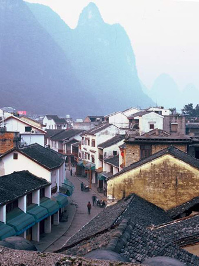

阳朔漓江渔火图
A.社日
阳朔俗语道："做官三年，不如耍社一天。"此话充分说明了"社"日的重要。
阳朔各乡各镇过"二月社"、"八月社"的历史已有一千多年。"社"，是供祀社王菩萨的节日，在老百姓的心目中比一般节日还要紧。
在阳朔各地，社日其实成了"十友"男人大聚会，名目叫做"吃社"。这是一种民间互帮互助的结社组织，是阳朔农村千百年沿袭而来的好传统。在村里，只要您参加了"十友"社，您家的老人过世后，一切后事有人帮忙到底，从入殓、报客、办夕，到入土圈坟，一切都做得妥善完满。如今农村又新兴了一些红白理事会，比"十友"结社的功能多了一些，但"十友"社仍然存在，并且继续发挥作用。
B.瑶家还歌堂愿
还歌堂愿的习俗至今仍然在阳朔县龙尾瑶一些村子里流行。据说，在一千多年前，瑶族有一个妇女特别会唱歌，还在各瑶寨还带了很多徒弟。瑶族人都敬称她为歌娘。后来，歌娘老了，但临死前总不断气。在床边守候送终的众徒弟中，有人猜到了歌娘的心事：怕死后没有人和她唱歌。于是众徒弟对着歌娘许下诺言，每隔五年一定要接她回瑶寨与众徒弟唱歌一次。听了徒弟的话，歌娘笑了笑，然后安详地闭上了眼睛。从此后，每隔五年，各村寨瑶胞就要还歌堂愿一次。每次还愿的时候，各家各户预先作好准备，并广告天下，同时邀请各自的亲朋好友届时参加瑶家歌堂愿。到了还歌堂愿的这天，村中人就推选一户人家做东道主，使用其堂屋来做歌堂，并迎纳四方朋友。每次还歌堂愿的活动时间都要持续三天三夜，以此纪念瑶族祖先歌娘。在纪念歌娘的三天三夜里，歌声不断，传遍四方。
C.壮族会山歌
阳朔全县壮族人口约有四万人，主要聚居在高田镇和普益乡。阳朔的壮族人家，每年都有一个传统习俗--男女会山歌。会山歌一般在每年的中秋节，正所谓"年年中秋是歌节，木叶歌声满山间。木叶吹得山水笑，歌声唱得月更圆。"。每年中秋节的晚上，明月当空，一片银辉，在所有的壮族村寨，到处都能听到笛声悠扬、山歌如潮。会山歌多数是以村以寨为单位，青年男女三五成群，扎成一堆，首先是用木叶吹奏，投石探路，按壮族山歌的调律，一曲又一曲地不断演奏，目的是寻找合适的对歌者，并达成彼此间的默契。找到对手后，即刻以歌代言，传情表意。许多的壮族男女青年都是通过会歌的形式，培养感情，成为恋人和夫妻的。
二十世纪八十年代后期，每年中秋节之夜，高田镇、普益乡的壮族青年把会山歌的地点转移到著名风景点月亮山下，吸引了全县以及邻县到那里会山歌。每年的参加者都都达到一二万人，成为有名的民间山歌会场。
D.赏牌灯
赏牌灯是一种喜闻乐见的民间文艺形式，在阳朔县流传已有上千年历史，和龙灯、狮灯、故事台、八宝纸扎等多种民间文艺活动一样，深受广大人民群众的喜爱。赏牌灯主要在元旦、元宵节等喜庆节日举行，由民间自发组织，单位和个人集资支持。牌灯由牌和杆组成，主要部位是一种扁长方形的纸糊灯笼，内部装有灯具，晚上光彩熠熠，外部则贴描图，花团锦簇，正面写上牌字，背面五彩纷缤。框内还暗装有八个或十个马须铃。整队舞者共二十二人，其中一人敲着碗锣，用锣声和自己跑出的路线指挥队伍。阳朔各个乡镇普遍都有舞牌灯的习俗，其中白沙镇舞牌灯声名较大。
E.阳朔傩舞
阳朔傩舞是一种古老的民间表演艺术，俗称为师公舞、跳鬼师，至今已有二千多年历史。在阳朔的乡村间，常常以傩舞来驱鬼逐疫。随着时间的推移，以后逐渐发展成为有人物、有故事情节的傩戏。
阳朔民间至今还有这种傩舞表演。一九五六年中央民族学院来阳朔对傩舞采风，抢救文化遗产，并进行了录音录像，采集了傩舞的原始资料。近年来，随着阳朔旅游事业的不断发展，如今滩舞作为一种民间舞蹈艺术，又被重新整理排练出来，为中外游客作表演。您可在漓江下游的"刘三姐水上公园"等处欣赏到这一古老艺术。
F.赶闹子
阳朔人把人们进行商贸交易的圩市叫"闹子"，习惯上把人们到圩市买卖办事统称"赶闹子"。大的闹子一般以乡（镇）为单位成圩市，一个乡（镇）就是一个闹子，现在阳朔县有九个乡（镇），就有九个闹子。这些闹子都按照民间约定的日子成圩市，每逢一、四、七日是杨堤、白沙闹子；每逢二、五、八日是葡萄、高田、福利闹子；每逢三、六、九日是金宝、阳朔镇、普益、兴坪闹子。这些圩市，时间最早的是兴坪圩，成于东汉三国时期，至今已有一千八百多年的历史。
每逢闹子日，圩市从早上八时左右开始成圩，至下午四时左右陆续散圩。闹子日这天，人们挑着自己的农产品，从全县的各村各寨赶来，先卖掉自己的农产品，然后买自己需要的生产和生活用品。闹子上人山人海，车水马龙，买什么都有卖，卖什么都有人买。各个闹子除了互通有无互外，又各有其特点。例如金宝乡的香菇、木耳、冬笋、竹制品等，白沙镇的金橘、板栗、柿子等，普益乡的早上市香瓜、返季节蔬菜等，兴坪镇的香芋、茶叶、药材等，阳朔镇、福利镇的旅游工艺品、仿古制品等。
赶阳朔各地的闹子，您可以看到阳朔县各族人民生产生活的基本面貌，可以买到最新鲜的本地时令水果和各种土特产，可以吃到最地道的地方风味食物；可以听到除广西官话以外的瑶、壮、闽、粤数种方言。可以说，赶过阳朔各地的闹子后，您就会对阳朔当今农村社会发展和民俗民风有了一些了解。
清晨的西街

G."四月八"牛王节
阳朔县各地农村的牛王节，是每年农历四月初八。在民间传说中，每年的这一天是牛王的生日。农民在这一天，对牛格外珍惜和爱护。
牛是农家宝，农民少不了。每年到了农历四月初八，早稻已经插完了，农民们出于耕牛劳苦功高的感谢，都要特意慰劳一番耕牛。四月初八这天，农民各家各户犁耙高挂，牛轭上壁，保证让耕牛休息一天，并且还特意精心护理。一大清早，农户们就将牛栏清扫干净，由主人亲自把牛牵到青草多的地方放牧，为牛洗刷污垢，梳蓖去牛虱。有的还则专门为老牛采来嫩草，洒上盐水去喂食。有的则煮黑饭（用枫木树芯叶拌和糯米），放上盐和猪肉给病牛吃。少数农户甚至煮甜酒蛋或买油炸粑给牛吃。
H.福利镇"五月八"会期
每年农历五月初八，是福利镇民间的一次盛会。这种传统会期流传至今已有近三百年的历史。如今，每年的会期活动内容一年比一年丰富多彩，并且有了更多的新时代风味。
农历五月八会期这天，各村各寨的村民们都扶老携幼来福利圩镇上赶会期，并纷纷到镇上的亲戚朋友家做客。镇上的主人们家家热情好客，倾情款待。在这天，各家各户都要推出用精肉做馅的"三酿"，即茄子酿、辣椒酿、苦瓜酿。吃饱喝足后，一同上街参加全镇万人文艺大游行，欣赏福利画扇、绣球等旅游工艺品，观看各种文艺表演、体育比赛以及露天电影等。这一天，镇上的每个人都玩得酣畅淋漓，乐不思归。
I.白沙六月二十三试新节
每年的农历六月二十三，是白沙镇的试新节。白沙镇上的白沙圩市，是阳朔县最大一条圩市，历来盛行经商，故商贾云集，殷实富裕者众多。六月二十三会期兴起于民国初年，本地商贾者为了更加繁荣白沙市场，发起以纪念关羽为名的"六月二十三"会期。
会期这天，家家户户都要吃新米饭、包新粽粑，并举行新禾开镰仪式。仪式为放喜炮四声，分别代表"人丁兴旺，生意兴隆，延年益寿，如意结缘"的意思。每次会期前后为三天，以六月二十三日这天为高潮。会期中最刺激的活动是抢炮。这是一种类似壮族抛绣球的活动，抢炮者都是年轻力壮的男子，需要斗智斗勇赛体力，很受群众欢迎。
随着时代的发展和人民生活水平的提高，现在，白沙镇人民把六月二十三会期名称改为庆祝丰收的"试新节"，决定三年举办一次。试新节的活动内容也将不断推陈出新，加入各种民间文艺、体育比赛和科技现场服务等方面的活动，会期也将越办越好。
J.七月半节
每年农历七月十五，阳朔人俗称"七月半"，又称"鬼节"，是纪念祖先的民间节日。过去，每年七月初八这天，家家户户要把祖先的魂灵" 请"回家中供奉于堂屋，一直供奉到七月十五晚，才把祖先魂灵送回山野，送的时候要在村边或者路口烧钱纸蜡烛和香。
每到七月半，大人小孩都要吃粑粑，俗称吃"狗舌粑"。为何要吃"狗舌粑"，说法很多，已不可考，但流传下来已有几百年的历史。所谓狗舌粑，跟一般的叶子粑基本相同，都是用粑粑粉调糊成团状，蒸制而成。但狗舌粑的形状是长方形的，不是圆形的，正像狗的舌头。狗舌粑里面要放馅，外面要撒上炒香的芝麻，并用高粱叶包实捆好后竖直架在特别准备好的竹叶帽盔壳四周，上笼大火蒸熟。狗舌粑粑粑用料讲究，又有高粱叶裹蒸，味道十分清甜可口，很有阳朔地方风味。
K.九月九重阳节
每年农历九月初九，是中国民间传统节日--重阳节。重阳节全国各地都比较兴盛，但阳朔民间过重阳节也有其特点。重阳节这天，老人们一般要带着小孩去爬山。儿子们要到野外去采摘已熟透了的金樱子（本地名叫刺糖果）回来，经蒸煮后放入事先准备好的坛子里，加入三花酒或米酒浸泡数月，供老人冬天饮用。这种酒叫重阳酒，酒香清甜，回味绵长，并有健骨祛风、壮腰强肾、延年益寿的药用功效。金樱子是一种纯野生药材，每年秋冬季节，圩市都有出卖。
L.九月十九庙会
每年农历九月十九，是兴坪圩镇的庙会。传说，这天是观音菩萨得道升天之日。每到九月十九这天，本地群众要在圩镇自发举行祭拜活动，据说至今已有大约四百年历史，已经成为了兴坪镇民间的传统习俗，兴坪庙会民间色彩非常浓厚，主要靠从单位、集体和个人募集资金来帮助开展这项传统活动。九月十九当天，一般会有群众集会、文艺游行、地方戏曲、公演电影、篮球赛等活动。
M.阳朔漓江渔火节
漓江，江水清澈，游鱼可数，是以叼鱼为食的鸬鹚鸟的天堂，也是阳朔漓江渔民用驯化的鸬鹚捕鱼的一种特殊劳作方式。鸬鹚捕鱼，以晚上作业最为壮观。您看，在那月光朦胧的夜色里，江面上渔灯往来穿梭，鸬鹚鸟扑腾欢闹，又加上渔歌唱晚，编织成一幅漓江渔火图，真是美不胜收。
一九九九年以来，"阳朔漓江渔火"被作为一个民俗风情旅游项目隆重推出，大受欢迎。每年的黄金十月，"阳朔漓江渔火节"已经成了阳朔的旅游节庆。每到渔火节这天，参观渔火节的中外游客达上万人。在阳朔码头到白沙大桥的数里江面上，渔火闪烁，竹筏穿梭，游客们在游船上、在岸边兴致勃勃地观赏这人文内涵丰富的节日。在渔火的闪耀中，在一阵阵三姐对歌的美妙歌声中，在迷人的漓江月色里，阳朔的整个夜晚沸腾了。
N.西街国际啤酒节
虽然啤酒节是一个具有浓厚西方色彩的节日，但作为"地球村"的阳朔西街，已成为举办国际啤酒节理想之地。
一九九九年十二月三十一日举办了第一届西街国际啤酒节，以后啤酒节一般在年末或年初的晚上举行。届时，各个国家的民间艺人都要表演富有异国情调的音乐歌舞。人们畅饮着啤酒，伴着摇滚音乐，不由自主地跳起了强劲的舞蹈。还有舞龙舞狮、卡通表演、趣味比赛等等，整个西街成了世界上最大的酒吧，不同国籍、不同肤色的人们在这里纵情欢乐，中西文化在这里交融汇合，友谊在这里传递。而喝啤酒比赛，把啤酒节推向了最高潮。
其实，在阳朔西街，只要您到了这里，您会发现，每一个晚上，都是节日。